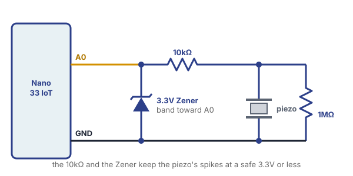

A contact microphone is usually just a piezo, a thin disc that makes a small voltage whenever it’s bent or shaken. Tape one to a table or a box, and the Arduino can tell when someone knocks on it.
The official Arduino documentation is a more complete reference:
To open the example, go to:
File > Examples > 06.Sensors > Knock
For this lesson, please collect the following:
WarningThe Arduino documentation only shows the 1MΩ resistor. Don’t stop there: a hard knock can make a spike of much more than 3.3V for an instant, and the Nano 33 IoT’s pins only take 3.3V. Never connect the piezo straight to A0. Always use the 10kΩ resistor and the Zener diode too.

With the USB cable unplugged, use three rows on the breadboard:
What each part does:
Then tape the piezo flat against a table or a box, with tape over the whole disc. It has to bend along with the surface, so it shouldn’t hang loose.
Before using the Knock example, let’s see what the piezo actually does. Upload this sketch and open the Serial Plotter.
void setup() {
Serial.begin(9600);
}
void loop() {
Serial.println(analogRead(A0));
}Knock on the surface. Each knock makes a sharp spike, and the reading drops back down right after. Notice:
There’s no delay() in this sketch on purpose. A
spike only lasts a moment, and a delay could miss it.
Now upload the Knock example. Here’s the code, without the long comment at the top of the file:
// these constants won't change:
const int ledPin = 13; // LED connected to digital pin 13
const int knockSensor = A0; // the piezo is connected to analog pin 0
const int threshold = 100; // threshold value to decide when the detected sound is a knock or not
// these variables will change:
int sensorReading = 0; // variable to store the value read from the sensor pin
int ledState = LOW; // variable used to store the last LED status, to toggle the light
void setup() {
pinMode(ledPin, OUTPUT); // declare the ledPin as as OUTPUT
Serial.begin(9600); // use the serial port
}
void loop() {
// read the sensor and store it in the variable sensorReading:
sensorReading = analogRead(knockSensor);
// if the sensor reading is greater than the threshold:
if (sensorReading >= threshold) {
// toggle the status of the ledPin:
ledState = !ledState;
// update the LED pin itself:
digitalWrite(ledPin, ledState);
// send the string "Knock!" back to the computer, followed by newline
Serial.println("Knock!");
delay(100); // delay to avoid overloading the serial port buffer
}
}Open the Serial Monitor and knock. Each
knock should print Knock! and switch the Nano’s
built-in LED on or off.
const int is a variable that
can never change. Pin 13 is the Nano’s built-in LED, so you
don’t need to wire one.threshold is the line between
noise and a knock. A reading at or above 100 counts as a
knock.ledState = !ledState; flips
the state. The ! means “not”, so LOW
becomes HIGH and HIGH becomes
LOW.delay(100) waits a tenth of a
second after each knock. This also helps keep one knock from
counting more than once, since the surface keeps shaking for a
moment after you hit it.Change threshold using the numbers you saw in
the Serial Plotter. It needs to be above the noise and below
your softest knock. What happens at 20? At
500?
Then move the piezo. Try a table, a box, a door, a window or a piece of cardboard. Which one gives you the tallest spikes?
Now make a knock do something. All of these go inside the
if, in place of the LED code or next to it:
tone(8, 440, 100);. If the sound sets off
another knock, you’ve made your own feedback loop, like Pendulum Music.
To stop it, move the speaker away from the surface or raise
threshold.0 and
180 on each knock. You can use the
ledState variable to decide which one.Keyboard.write(KEY_UP_ARROW); to jump in the Dino
game by knocking on the table. Get your threshold
right first, because every false knock presses the key in
whatever window is open, including your sketch.Want to know how hard someone knocked, or how much time passed between knocks? The Bouncing Ball Sensor workshop uses the same circuit to do both.
Knock! prints nonstop. The 1MΩ
resistor may be missing or in the wrong place: it goes from the
piezo row to the GND row. If it’s wired correctly, raise
threshold.delay(100) to
delay(200).threshold, or move the piezo to something
else.